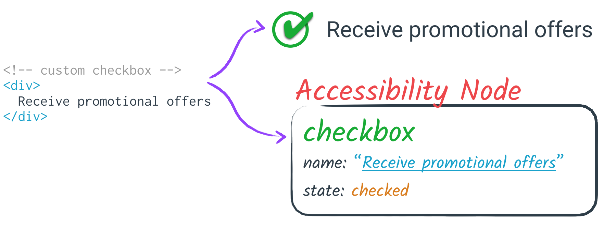

Accessibility Object Model
Specification Editors:
Alexander Surkov, Mozilla
Alice Boxhall, Google
Dominic Mazzoni, Google
James Craig, Apple
Specification Editors:
Alexander Surkov, Mozilla
Alice Boxhall, Google
Dominic Mazzoni, Google
James Craig, Apple
✔
Great! The Accessibility Object Model is enabled in this browser.
Demos should work fine.
✘
Accessibility Object Model support is not enabled. Interactive features of these slides won't work.
To enable it in Chrome, use this command-line switch:
--enable-blink-features=AccessibilityObjectModel
To enable it in Safari Technology Preview, select
Develop > Experimental Features > Accessibility Object Model.
Tip: Arrow keys move between slides, but not when something else has focus.
Page Up / Down moves between slides, regardless of focus.
Assistive technology (AT) augments or replaces the existing UI for an application. Examples include:

Each operating system has its own accessibility APIs for native applications.
Besides assistive technology, these APIs are also often used for automation, for example for password managers or for single-sign-on.
Native applications expose an accessibility tree via accessibility APIs. Each accessibility node has properties such as a role, name, state, and actions.

Web browsers automatically map the DOM into the accessibility tree.

The web has rich support for making applications accessible, but only via a declarative API.
There's always a one-to-one correspondence between a DOM node and a node in the accessibility tree.
Typically, most platforms allow developers to use a programmatic API to create virtual accessibility trees to implement accessibility for custom views.
The web platform requires everything to do with accessibility to be specified declaratively, even as many parts of the web platform are moving to more dynamic, imperative style APIs.
Today, a library author creating a custom element is forced to "sprout" ARIA attributes to express semantics which are implicit for native elements.
Unlike a native element, a custom element's semantics may be completely overwritten or removed by the author using the custom element, and it is impossible to distinguish between the semantics provided by the custom element and semantics set by the page author.
This capability need not, but may be limited to Web Components.
To express an accessible relationship between two elements in the DOM, ARIA attributes let one element refer to the ID of another element.
aria-labelledby indicates one element labels another:
First name:
aria-activedescendant indicates a descendant that's focused in a composite control like a list box.
Item 1
Item 2
Item 3
It can be cumbersome and error-prone to maintain unique IDs on all elements that have a relationship with some other element.
But if you're using Shadow DOM, it's impossible to establish a relationship between two elements that aren't part of the same tree scope.
For example, it's
impossible to make an accessible combobox using
aria-activedescendant if the the text field is in a different tree scope from the listbox options:
#shadow-root (open)
|
|
|
Option 1
Option 2
Option 3
ARIA only helps the web author communicate in one direction: from the web app to the assistive technology.
However, AT can also command and control applications, for example issuing commands to activate, focus, or scroll. While native HTML elements already support these commands, web authors can't override this behavior for custom elements.
Examples: AT wants to select an item in a list box, increment a slider, or dismiss a dialog.
Another example: AT user performs a gesture to explicitly scroll to the left on a map widget.
To make a canvas-based UI (for example, a UI drawn using WebGL) accessible requires hacks like non-rendered fallback DOM content doing double duty as the accessible version of the painted UI.
More generally, any UI which has a visual semantic structure (such as an image with complex content) which doesn't match up to its DOM structure is difficult to make accessible.
There's no way to programmatically detect if an accessibility feature is supported by the browser or if you're using it correctly.
Microsoft and Mozilla independently proposed a JavaScript accessibility API. Apple and Google had similar ideas.
AOM is a collaboration between Apple, Google, and Mozilla, part of the Web Incubator Community Group. It takes the best ideas from previous proposals and organizes them into four phases, each with smaller scope, each solving an increasing number of real-world use-cases.
Both Safari and Google Chrome have implemented some of the spec experimentally.
All syntax shown on these slides is subject to change.
We are committed to solving these problems, but the solution may not be exactly what you see here.
Phases 1 through three, taken together, should bring the capabilities of accessibility on the web closer to what is possible on native platorms.
Basically, reflect ARIA into JavaScript.
Every ARIA attribute, such as
role and
aria-checked here:
Receive promotional offers
...can be set directly from JavaScript:
el.role = "checkbox";
el.ariaChecked = true;
These properties will also be available on the ShadowRoot interface.
This will allow Custom Elements to express their intrinsic semantics:
class CustomCheckbox extends HTMLElement {
constructor() {
super();
this.attachShadow({mode: 'open'}); // mode may also be "closed".
}
connectedCallback() {
this.shadowRoot.role = "checkbox"; // Set the default semantics.
}
static get observedAttributes() { return ["checked"]; }
// When the custom "checked" attribute changes, keep the accessible checked state in sync.
attributeChangedCallback(name, oldValue, newValue) {
switch(name) {
case "checked":
this.shadowRoot.ariaChecked = (newValue !== null);
}
}
}
// Authors may use ARIA as usual:
Instead of using an IDREF:
el.setAttribute('aria-activedescendant', 'child' + childIndex);
...just reference another element directly:
el.ariaActiveDescendant = child;
Problem: if you create an accessible element with
role=slider, then interact with that element via a screen reader on a mobile device, you will hear instructions to increment
or decrement the slider.
However, there is no way for a web developer to implement the slider such that following those instructions will have the desired effect.
As a reminder, AT users are often not generating keyboard, mouse, and touch events.
They issue high-level commands (click, focus, select, dismiss, etc.) directly to their AT, and the AT tells the app to take that action via accessibility APIs.
Listen to input events directly from assistive technology.
slider.addEventListener("accessibleincrement", function(event) {
console.log("Got Increment from assistive technology");
});
Possible events include:
"accessiblecontextmenu"
"accessibledecrement"
"accessibledismiss"
"accessiblefocus"
"accessibleincrement"
"accessiblescrollintoview"
"accessibleselect"
"accessiblesetvalue"
"accessibleclick"
"increment",
"decrement", or
"dismiss".
If an AOM event listener is ever called, the web page *definitively knows* that the user is running AT.
Some users may not be comfortable revealing this, due to concerns of discrimination, or of being offered an undesired alternate interface.
So triggering an AOM event listener brings up a new user permission dialog before the web page can capture the event.
If the user does grant permission, this is great because the app can now enable any extra features needed by AT.
If the user does not grant permission, they can have more confidence they're getting the same experience as everyone else and that they haven't revealed to the site that they're an AT user.
We would suggest that authors use progressive enhancement techniques to ensure that users have as acceptable experience as possible regardless of whether they gave permission to use AOM, or indeed whether the browser supports AOM.
Using VoiceOver, try Interacting with this slider and using VoiceOver commands to increment and decrement it.
Code skeleton:
slider.tabIndex = 0;
slider.role = "slider";
slider.ariaValueMin = 1;
slider.ariaValueMax = 10;
slider.ariaValueNow = 5;
slider.addEventListener(
"accessibleincrement", function() {
updateSlider(1);
});
slider.addEventListener(
"accessibledecrement", function() {
updateSlider(-1);
});
You can construct a "virtual" AccessibleNode that isn't associated with any DOM element.
let virtualNode = new AccessibleNode();
virtualNode.role = "button";
virtualNode.label = "Play Game";
Insert an AccessibleNode as the child of a DOM element or another AccessibleNode:
// This replaces all DOM children of document.body for the purposes
// of accessibility tree computation.
document.body.attachAccessibleRoot();
document.body.accessibleRoot.appendChild(virtualNode);
You can't use these methods to rearrange the accessibility tree corresponding to the DOM.
You can only build a "virtual" accessibility tree that "hangs off" of one DOM node.
To set the bounding box of a virtual node, provide its left, top, width, and height in pixels, relative to its
offsetParent, which can be any ancestor AccessibleNode.
virtualNode.offsetLeft = 30;
virtualNode.offsetTop = 20;
virtualNode.offsetWidth = 400;
virtualNode.offsetHeight = 300;
virtualNode.offsetParent = document.body.accessibleRoot.firstChild;
Relative coordinates are important for things like a canvas-based UI, because the canvas element might have CSS transforms applied to it.
Every AccessibleNode has a corresponding
ComputedAccessibleNode.
Accessing it is asynchronous (via a Promise), and it gives you full access to that node, and the accessibility tree.
let computed = await getComputedAccessibleNode(myListItem);
computed.role; // "listitem"
computed.name; // "Picard"
computed.parent.role; // "list"
computed.children.length; // 0
The
ComputedAccessibleNode enables you to determine if a role, or any other accessibility feature, is supported.
let button = document.createElement("button");
button.role = "hammer";
let computed = await getComputedAccessibleNode(button);
computed.role; // "button" (not "hammer")
Walk the accessibility tree for testing or debugging.
function printAccessibilityTree(computed, indent) {
print(spaces(indent) + 'Role: ' + computed.role + ', Name: ' + computed.name);
for (let i = 0; i < computed.children.length; i++) {
printAccessibilityTree(computed.children[i], indent + 1);
}
}
let computed = await getComputedAccessibleNode(document.body);
printAccessibilityTree(computed, 0);
Write a screen reader or other AT
{kind=link}